Planning Context
어떤 기획이었나
- 왕위 쟁탈전은 경쟁 콘텐츠 특성상 스케줄, 입찰/입장, 전투 진행, 결과 확인, 승리 보상까지 여러 상태가 이어집니다.
- 유저가 어느 시점에 무엇을 할 수 있는지 명확히 인지하지 못하면 콘텐츠 진입과 결과 확인에서 혼란이 생깁니다.
ProjectN · Competitive Content
대형 경쟁 콘텐츠의 진입, 스케줄, 입장 가능 상태, 결과, 보상, 알림 정책을 UX 스크립트와 스트링 산출물로 정리한 사례입니다.
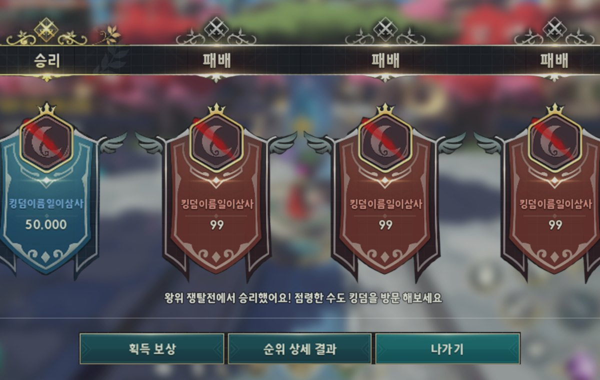
Planning Context
Process
Deliverables
Result
대형 콘텐츠의 상태별 알림과 결과 확인 흐름을 분리해 개발/QA가 확인할 수 있는 산출물로 남겼습니다.
Deliverable Captures
원본 문서는 포함하지 않고, 포트폴리오 확인용으로 일부 페이지만 이미지화했습니다. 슬라이드 마스터/상하단 영역은 흐림 처리했습니다.
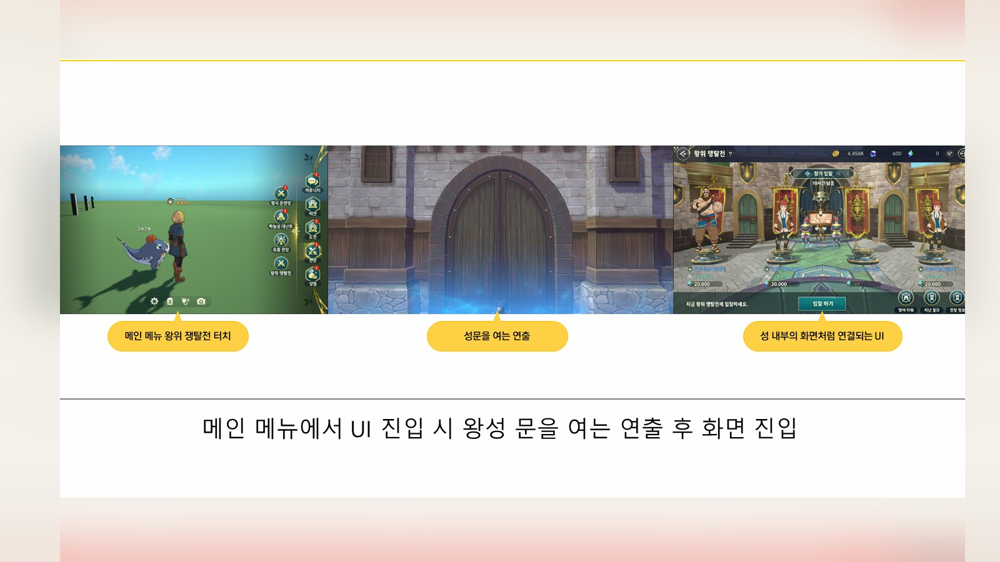
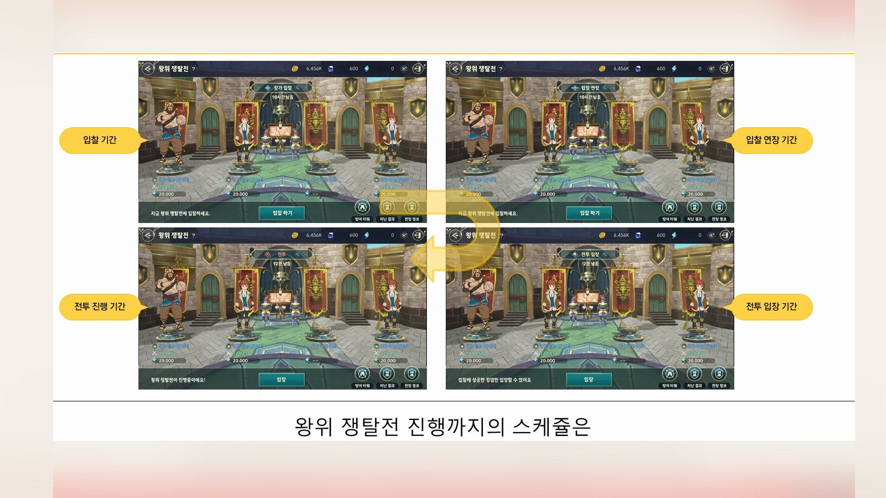
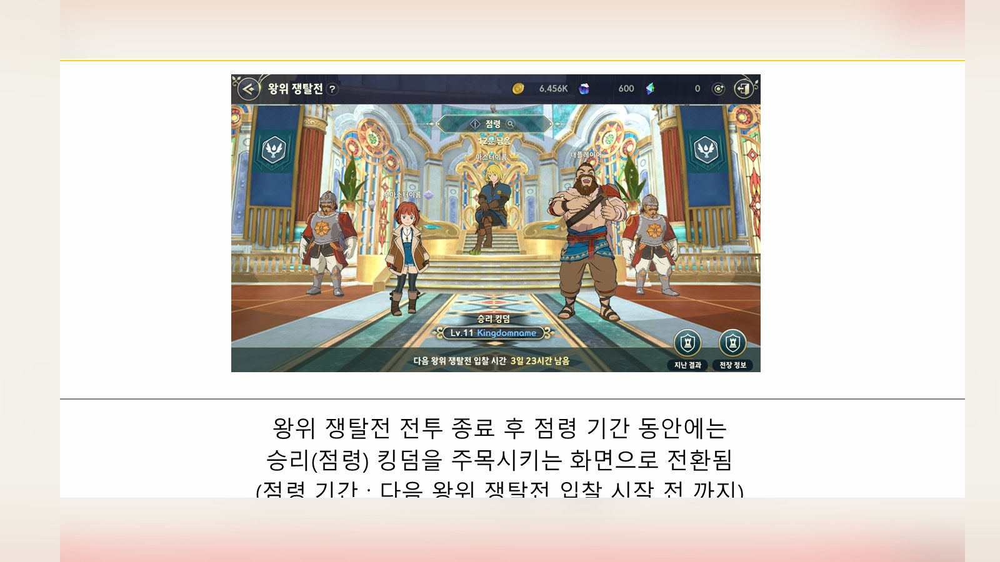
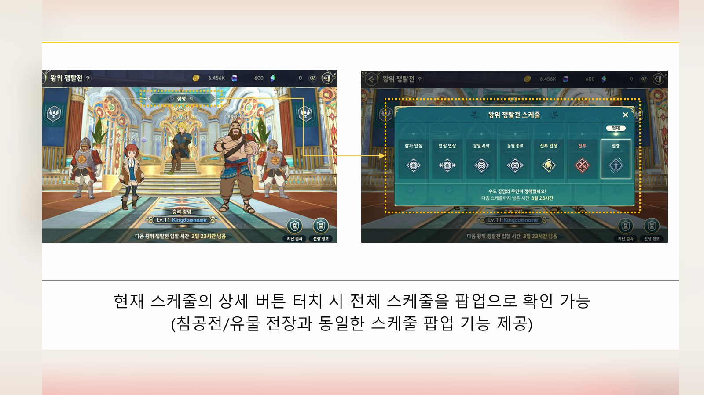
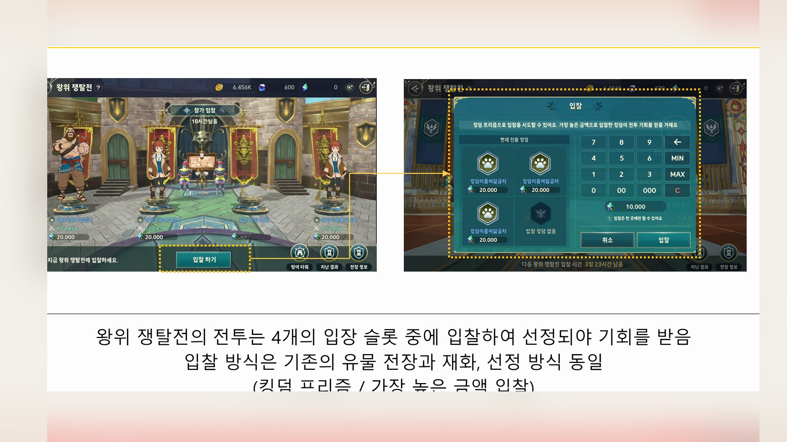
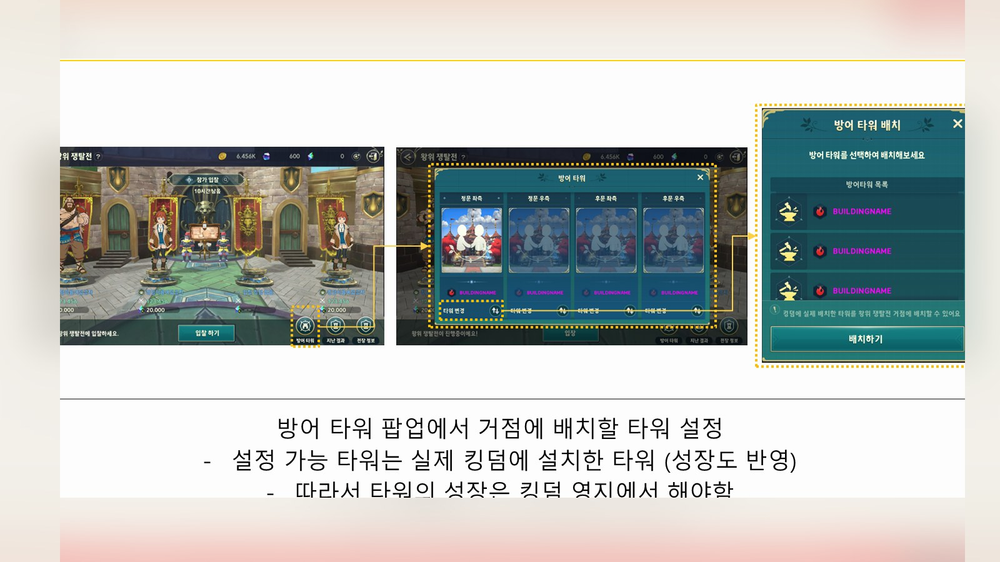
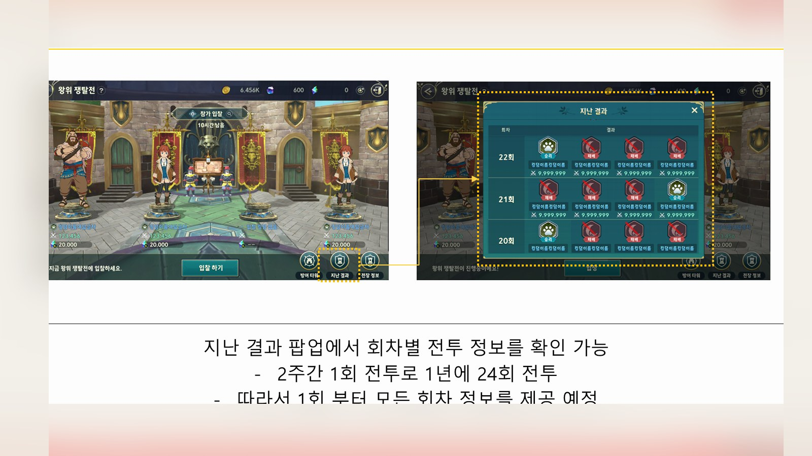
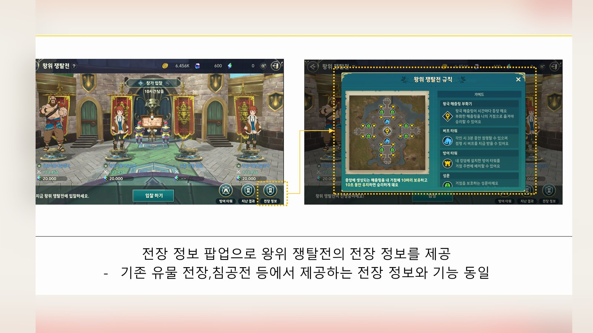
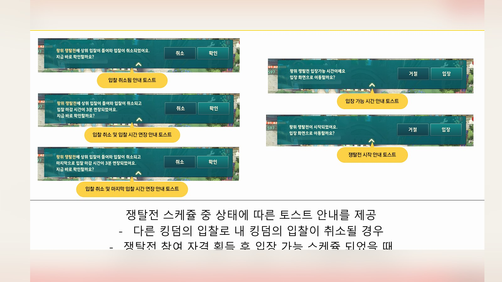
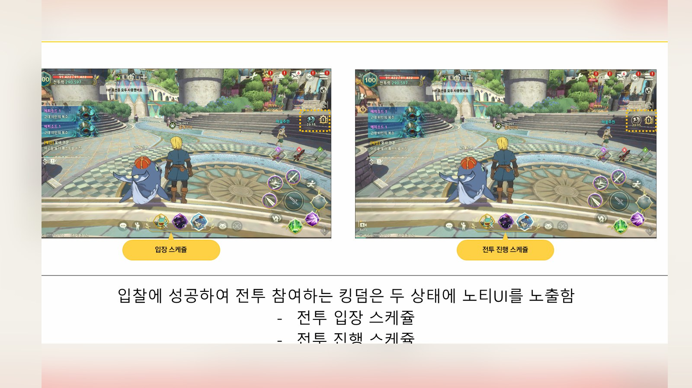
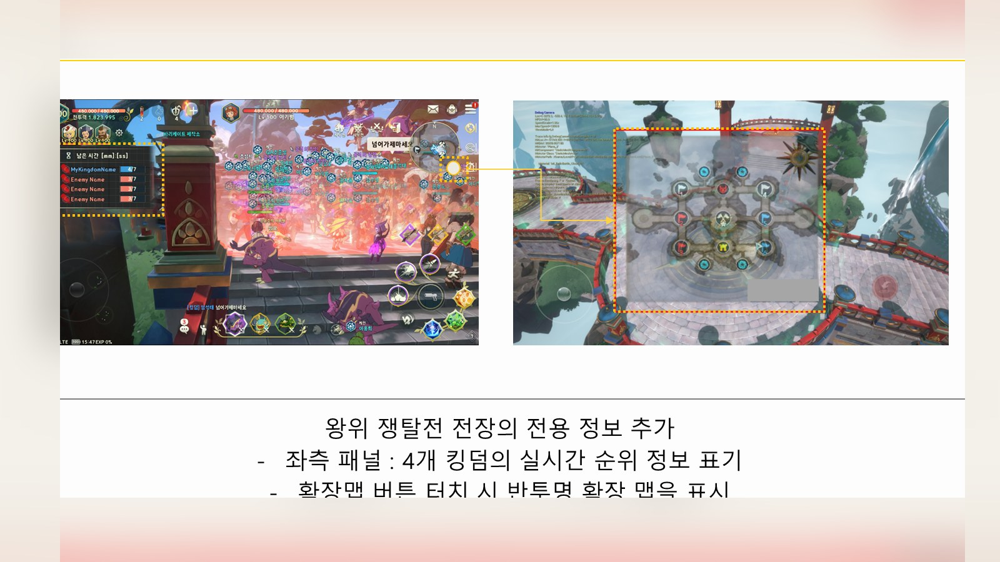
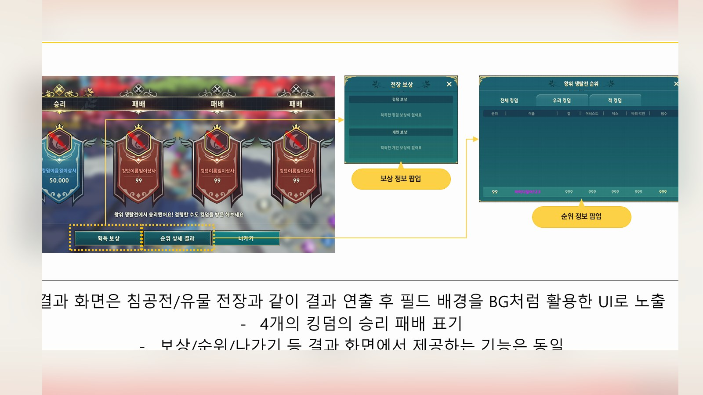